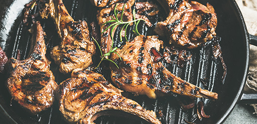

Grilled Lamb

Garlic and Rosemary Grilled lamb chops
These Garlic and Rosemary Lamb CHops are an easy dinner recipe made with a super fresh and flavorful marinade and grilled o perfection
Ingredients
- 2 garlic cloves, finely chopped
- 1 tbsp fresh rosemary leaves
- 1 tsp fresh thyme leaves
- pinch cayenne pepper
- coarse sea salt
- 2 tbsps olive oil
- 6 lamb chops
Steps
-
In a food processor add the garlic, rosemary, thyme, cayenne, and salt. Pulse until combined. Pour in olive oil and pulse into a paste. Rub the paste on both sides of the lamb chops and let them marinate for at least 1 hour in the refrigerator.
Remove from refrigerator and allow the chops to come to room temperature; it will take about 20 minutes.
-
Prepare the braai and add the chops onto the grill and sear for about 2 minutes.
Flip the chops over and cook for another 3 minutes for medium-rare and 31/2 minutes for medium.
Back to Home page